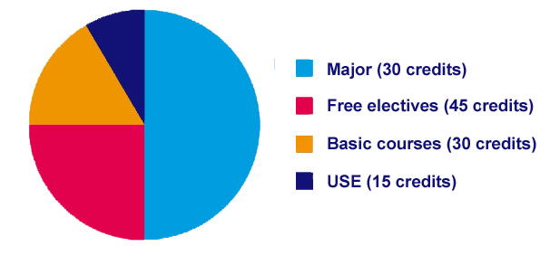

Major Computer Science & Engineering
Basic Courses
Every student takes a number of basic courses. These basic courses provide the foundation for moulding the 'Eindhoven Engineer', and will develop your transversal knowledge. After taking these basic courses you haves the knowledge you will need to follow electives and coherent elective packages in a degree program outside the one you have chosen.
The basic courses include Mathematics, Natural Sciences, Modeling, Design, User, Society & Enterprise, and Professional Skills. There are different variants of the basic courses for different degree programs.
The basic subject matrix provides an overview of preferred basic courses for your Major.
- 0LEB0 - Introduction to modeling - from problems to numbers and back
- 0SAB0- USE basic: Ethics and history of technology
- 2WAB0 - Calculus variant A
- 2WBB0 - Calculus variant B
- 2WCB0 - Calculus variant C
- 3NAB0 - Applied Physical Sciences conceptual
- 3NBB0 - Applied Physical Sciences formal
- 3NCB0 - Applied Physical Sciences flows
- 4WBB0 - Engineering Design
Changing Major
When you change your Major during your Bachelor, it is possible you followed an other Basic Course.Speak to your studyadvisor in this case, because it is possible you have to gain some knowledge to succesfully complete your new Major.